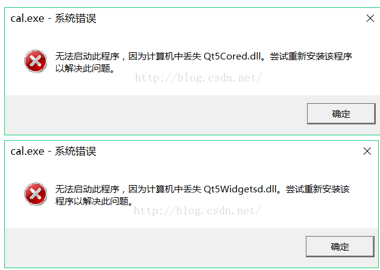

Qt Creator 中
项目路径切换，或文件夹重新命名后，执行编译路径出错：
- 在该项目执行 qmake 重新生成编译文件 MakeFile
- 再执行编译
Qt项目软件打包发布，安装包运行安装完成后程序运行出现缺少dll文件的问题？
比如像这样的错误：

解决办法
- 思路：配置QT的环境变量
- 参考文章
在Qt开发中遇到程序运行后点击按钮异常退出的情况：
- 直接在函数中访问了私有属性的数据变量，被禁止访问，程序退出；
- 借助调试功能找出异常退出的位置，分析可能导致退出的原因。
Qt项目编译出现QMetaObject::connectSlotsByName: No matching signal for slotName的错误？
槽函数命令的问题，重新修改为一个更简短的名字，不要有过多的下划线，重新编译；
可参考文章：[QMetaObject::connectSlotsByName: No matching signal]
Qt信号与槽函数未能执行的原因分析：
- 使用了自定义的信号类型，未能进行注册，可使用qRegisterMetaType注册一下该类型；
- connect函数的第一个参数，需要的是类型指针；